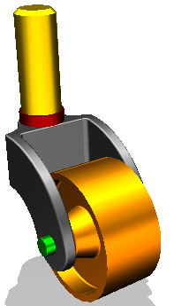

预计完成此练习需要：5–8 分钟
在这个练习中，您将基于一个设计方向的更改来替换组件。
其他设计是已经复制了一份脚轮叉(caster fork)组件部件，使用另存为命令，将它重新命名为脚轮叉-修改，并修改它，现在您需要把这个更改后的叉纳入您的装配中。
您将替换这个新的部件到您的脚轮装配中，并注释对组件关联性的影响。

开始 替换组件
要获取更多信息，参见：
使用命令查找器查找替换组件和关闭并重新打开选定的部件
帮助→CAD→装配→组件命令→替换组件